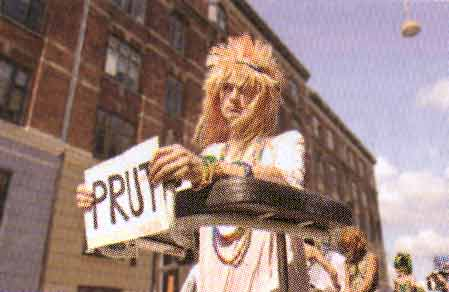

Dennis Agerblad walks the Pride Parade, Copenhagen. |

Dennis Agerblad. Foto: Anders S. Mortensen
| Parade i stærk modvind
|
| Årets Danish Mermaid Pride blev i høj grad præget af
den kritik af arrangementet, der var blevet rejst af forskellige organiseringer
(under så farverige navne som Homoer for radikal forandring, Kyske
Lilly, Female Power Station, Danseskolen Fredagsbio, Piratkopien, Pikfuglen,
Dusk-bevægelsen, Barbaras Køkken, danmarks Sammenbrud, Pussy+,
Dåseskjul og Foreningen Mere Sex) og personer fra det homoseksuelle
miljø i forskellige medier op til paraden. De kritiserer Priden for
kommercialisering, nationalisme og tilpasning og opfordrede samlet homoerne
til at blive hjemme. Desuden blev der for første gang i København afholdt et egentligt anti-parade arrangement under titlen SKAM i H.C. Ørstedparken. Her havde arrangørerne opfordret alle homoer til at komme forbi og være "klamme, fattige, perverse, grimme, onde og udanske". I løbet af dagen tog 3-400 imod denne invitation. Endelig blev der natten før paraden malet ordlyden "Fuck Danish Mermaid Pride", "Homoer mod normalitet". Politiet anholdt i den forbindelse tre lesbiske og udtalte i løbet af lørdagen til Ritzau, at disse var forbundet med SKAM-arrangementet, hvilket siden blev citeret i både homo- og heteromedier. Allerede senere samme lørdag trak Politiet denne kobling tilbage og har overfor såvel MeteroXpress som Panbladet bekræftet, at der intet belæg er for at sætte de to ting i forbindelse med hinanden. Arrangørerne bag SKAM har ligeledes været i kontakt med Panbladet og fortalt, at de ikke er en "fraktion", "kampagne" eller "organisation", som det ellers er blevet fremstillet flere steder. "Vi er et sammenrend af en række personer og organisationer, der har fundet sammen om det fælles mål at lave et alternativt arrangement til paraden , som er endt med at blive en kommerciel zoologisk diskohave med nationalistiske hyletoner. Paradens uddeling af en pris til Københavns Politi er bare det seneste eksempel på Pridens tilpasningsiver. Nu måtte festen stoppe - så vi lavede vores egen." Om det skyldes disse tre faktorer, vides ikke, men årets parade havde markant færre deltagere end de forrige år. Også Pridens nattefest havde mere end svært ved at trække folk til. Øksnehallen har plads til 3.000 personer, men kun højest 1.000 dukkede op. Således valgte flere homoer de to alternative fester den aften - enten Female Pride på Lyngbyvej eller dunst på Holmen. |